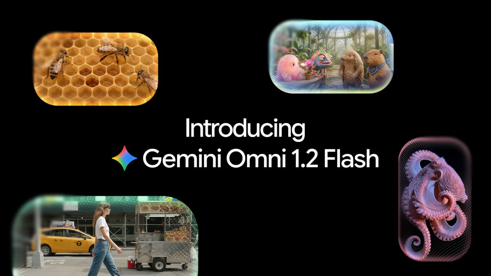
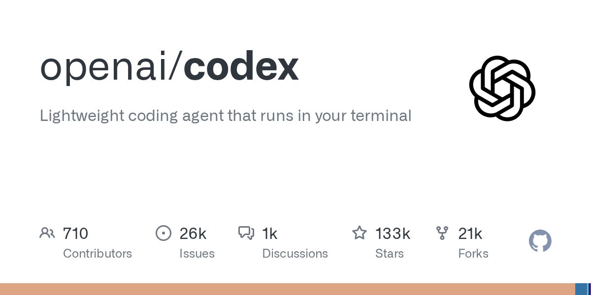
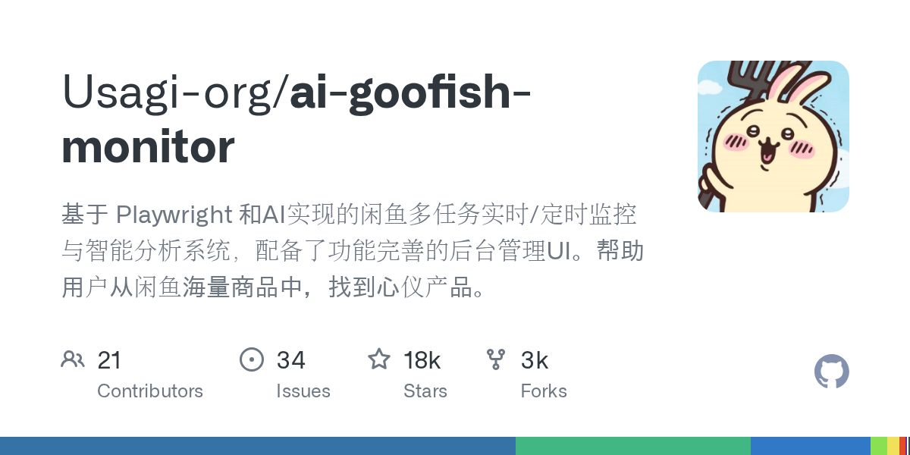
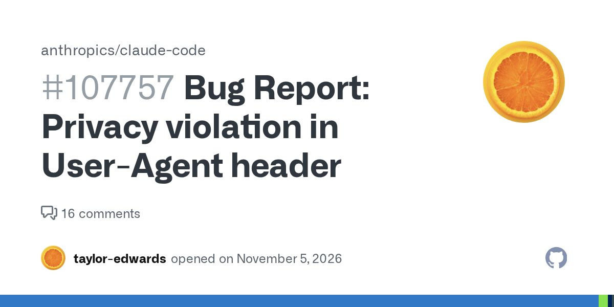

AI 日报 · 2026-11-06（周五）
时间窗口：11-05 08:15 到 11-06 08:15（台北时间）。每条都读过正文、核对过日期；腾讯 Hy4、GPT Image 2.6 首发在窗口外，未收录。
今日看点
- Cursor 可以直接构建并上线应用： 描述需求后，云端 Agent 搭建网页、数据库、登录与托管，生成可分享的链接。
- AI 与安全： OpenAI 发布 GPT‑6 Cyber，称为 Linux 内核 948 个漏洞写出提权利用；Claude Code 用户反馈邮箱出现在 User-Agent 请求头中。
今日要闻
百度开源文心 5.5 Flash Base。
原文正文要点
MoE 架构，总参数 2800 亿、每 Token 激活 140 亿，推理阶段支持最长 100 万 Token 上下文。量子位（11-05 15:15）｜Hugging Face
Claude Code 被用户指在 User-Agent 中带上邮箱。

原文正文要点
用户在 GitHub 反馈，联网搜索时邮箱被写入请求头发给第三方网站，此后收到大量诈骗邮件（版本 2.1.318，约 100 个赞同）；官方尚未回应，为用户自述。Issue（11-05 开帖）
V2EX 讨论如何判断文字是否由 AI 写成。
原文正文要点
楼主在知乎发布 AI 辅助回答被禁言 7 天，75 条回复讨论检测工具的准确性。V2EX（11-06 01:43 时 75 条回复）
工具与更新
Cursor Live Apps
原文正文要点
启动云端 Agent 说明要构建应用，即可搭建网页、按需创建 Postgres 数据库、通过 Cursor SSO 设置登录并配置托管，选择域名后获得上线链接。Changelog（Nov 5, 2026）
Gemini Omni 1.2 Flash

原文正文要点
原生生成 15 秒视频，参考遵循更好，支持多轮对话编辑，价格降低 30%，可在 Gemini API、Google Vids 等使用。Google 博客（11-06 01:00）
Codex 0.167.0

原文正文要点
正式版发布，同日还有 0.168.0 alpha.4 至 alpha.7；正式版页面未附更新说明。Release（11-06 07:31）
热门项目与玩法
MossImage Studio
原文正文要点
把开源 MOSS-Image 生图模型接到网页，可先在画布拖框确定标题、日期和主图位置再生成海报，免费生成 3 张。V2EX（11-06 01:07）
GPT Image 2.6 GIF/SVG 生成工具
原文正文要点
按场景整理提示词，可生成图片、GIF 循环动图或 SVG，提供免费试用。V2EX（11-05 23:23）
GitHub Trending 今日榜

原文正文要点
以下是本期项目及单日新增星数。
- ai-goofish-monitor（+240）：基于 Playwright 和 AI 的闲鱼商品定时监控与分析，带后台界面。
- agent-desktop（+2173）：给 AI Agent 用的电脑操控命令行工具。
- skills（+2071）：作者自用的 Agent Skills 合集。
- gstack（+612）：Garry Tan 的 Claude Code 配置，包含 23 个工具。
需求与合作动态
工业设备运维平台三端前端合作
原文正文要点
基于若依与 Vue，涵盖 Web 管理端、微信小程序及钉钉端（工单、报修、告警、报表、智能问答入口），征集意向与分项报价；可使用 AI 辅助，但需能独立解释和维护代码。电鸭（11-05 11:22）
AI 短剧公司招募远程兼职短视频伙伴
原文正文要点
深圳团队，独立负责一条产业线的策划、制作与发布，要求熟悉剪映或 CapCut 并懂英文，薪资为固定加浮动。电鸭（11-05 18:14）
兼职前端开发与 AI 视频创作
原文正文要点
N0S.tech 两款 SaaS 已上线，需要用 AI 编程工具做前端，并用 AI 视频工具制作产品宣传短片，薪资未注明。电鸭（11-05 15:36）
今日推荐方向
用 Cursor 构建并上线一个小应用
- 切入角度
- 从描述需求到获得上线链接，了解数据库、登录与托管分别由谁处理。
- 参考素材
- 适合读者
- 想做内部小工具、但不熟悉部署的初学者。
AI 写作与内容检测
- 切入角度
- 了解社区平台如何处理疑似 AI 辅助内容，以及检测工具的局限。
- 参考素材
- 适合读者
- 日常用 AI 辅助写作的读者。
AI 编程工具的隐私与安全

- 切入角度
- 结合用户反馈的请求头问题和 GPT‑6 Cyber 的漏洞研究，了解工具联网时可能传出哪些信息。
- 参考素材
- 适合读者
- 开始使用 AI 编程工具的初学者。
未能核验的来源 展开查看
打不开或被限流
r/vibecoding、r/ClaudeAI 返回 403；电鸭网页出现验证码，改用帖子接口读取正文；OpenAI 文章页命令行请求被拦截，改用其他方式读取正文。